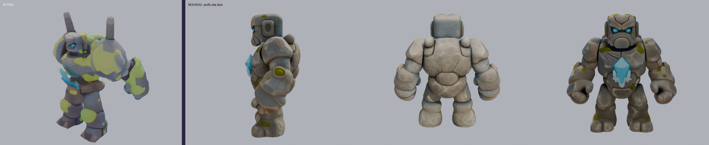
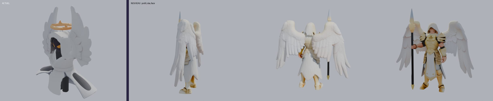
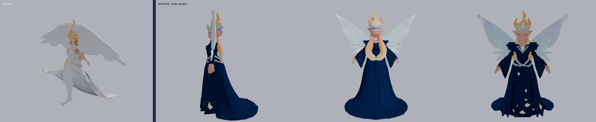

Même méthode que les quadrupèdes et les oiseaux : yeux en amande, bras et jambes bien séparés du corps, pas de queue, rien de bébé. 13 créatures (les 4 boss bipèdes, Géant, Golem ancien, Yéti géant et Roi citrouille, ne changent pas : leurs animations suivent leur squelette). Les ailés gardent leurs ailes ouvertes (toujours en vol dans le jeu). Sur chaque image : à gauche l'actuel, puis le nouveau de profil, de dos et de face.
Chevalier de l'ombre · cape violette, épéeChampi sauteur · 2e essai : le 1er n'avait pas de bras

Golem de pierreGolem de cristalGolem géode · 2e essai : le 1er n'avait presque pas de cristauxGolem de glaceGolem de magma · le 2e essai avait des tuyaux bizarres, 1er gardéGolem météoreGolem citrouille

Ange lumineux · 2e essai : le 1er ressemblait à un vieux moine chauve

Fée céleste · 2e essai : longue robe étoilée (le 1er faisait trop jeune femme réaliste)